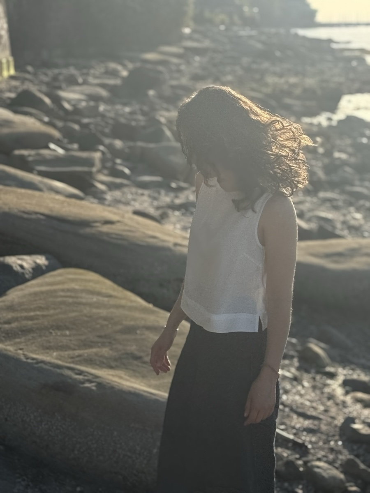

Bahar Khazei
Bahar Khazei is a sound artist, composer, and performer living in Vancouver whose work spans electroacoustic music, free improvisation, ambient noise and synthesis.

Originally from Tehran, her practice is informed by themes of language, migration, and belonging. In her work, she often uses prepared piano, noise, collected sounds, field recordings, speech, and original compositions. Her work captures liminal spaces where the familiar and unfamiliar meet, exploring concepts such as language, othering, loss of home, and belonging. As an active member of Vancouver's experimental music community, she performs regularly in the city's free improv and the underground noise scenes.